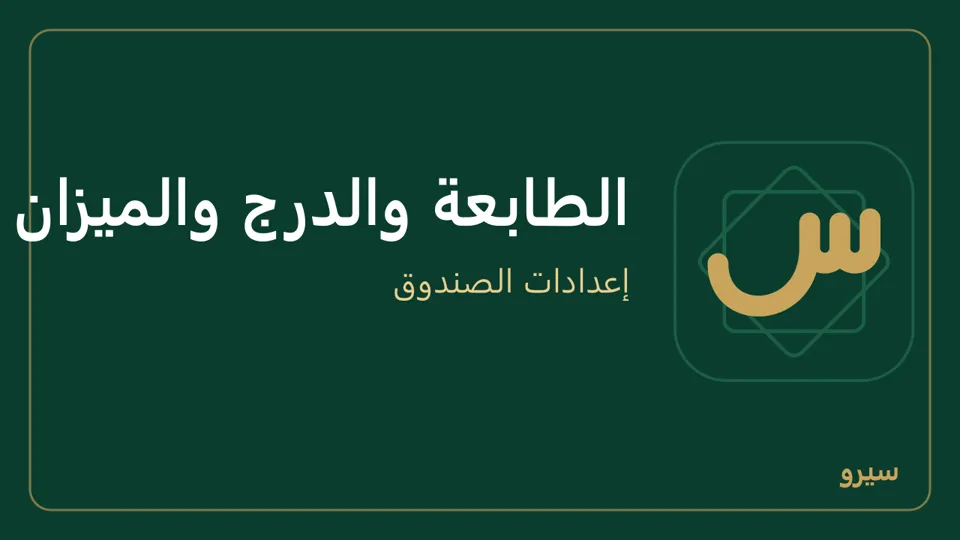

الطابعة والدرج والميزان
من الإعدادات ← نقطة البيع. الطباعة التلقائية وإظهار المجموعات في نقطة البيع وسطر الإيصال وباركود الميزان تحت على هذا الجهاز فقط: كل جهاز يضبطها لنفسه. وتحتها وردية لكل جهاز وفتح الوردية وحدها عند أول بيعة (كيف): قاعدتان للمحل كله.
- طباعة الإيصال تلقائياً بعد كل بيع: اجعل طابعة الإيصالات هي الطابعة الافتراضية في ويندوز.
- سطر أخير على الإيصال: عبارة شكر أو رقم هاتف.
- تقريب النقدي في الصندوق: الفاتورة تبقى بمبلغها حتى القرش، أما ما يُقبض نقداً فيُقرَّب لأقرب فئة تختارها (مثلاً 0.25 أو 5 ليرات)، ويُقيَّد الفرق في حساب فروقات التقريب ويُطبع على الإيصال. يسري على كل أجهزة المحل.
- تقريب أسعار الليرة (حين تكون الليرة عملة الدفاتر أو من عملات المحل): سعر الصنف بعملة أخرى يتحوّل إلى الليرة بسعر صرف اليوم فيخرج بكسور، مثل 1.35 $ × 13,000 = 17,550. اختر لأقرب 1 أو 5 أو 10 أو 50 أو 100 ل.س، فيُقرَّب حيث يتحوّل: نقطة البيع، وفاتورة البيع بالليرة، وملصقات الرفوف، وسعر «اليوم» في الأصناف. السعر المكتوب بالليرة يبقى كما هو، والدولار لا يُقرَّب. يسري على كل أجهزة المحل.
- أقصى نزول عن سعر البيع %: كم يُسمح للبائع والكاشير أن ينزل عن سعر الصنف (أو سعر التسعيرة) عند المفاصلة، بعد الحسم على السطر، في نقطة البيع وفاتورة البيع وعرض السعر وطلب البيع. 10% على صنف بـ 10,000 يعني لا أقل من 9,000. فارغ: بلا حدّ. مع أقل سعر بيع في بطاقة الصنف (كيف) يُؤخذ الأعلى منهما. يسري على كل أجهزة المحل، وما يحدث تحته في البيع.
- عملة البيع في نقطة البيع (حين يكون للمحل صندوق نقدي بعملة غير عملة الدفاتر، مثل صندوق الليرة في دفاتر بالدولار): نقطة البيع والمطعم يبيعان ويطبعان بهذه العملة بسعر صرف اليوم، ونقدهما يدخل صندوقها، وإغلاق الوردية يسأل عن المعدود فيه (كيف). يسري على كل أجهزة المحل.
- الدرج يُفتح مع الطابعة إن كان موصولاً بها (من إعداد الطابعة في ويندوز).
- باركود الميزان (يبدأ بـ 2، 13 رقماً): للأصناف الموزونة؛ اكتب في باركود الصنف رقمه على الميزان.

على الجوال: وردية لكل جهاز وفتح الوردية وحدها عند أول بيعة وسطر أخير على الإيصال وتقريب النقدي في الصندوق وتقريب أسعار الليرة وعملة البيع في نقطة البيع وأقصى نزول عن سعر البيع % في الإعدادات ← طرق الدفع. طابعة الإيصالات والدرج والميزان على الكمبيوتر فقط؛ الجوال يرسل PDF أو يطبع على طابعة واي فاي.